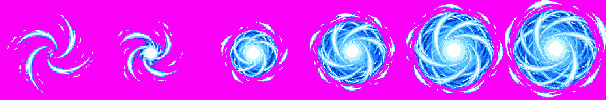
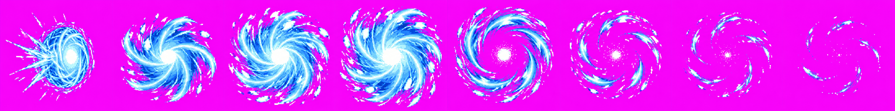
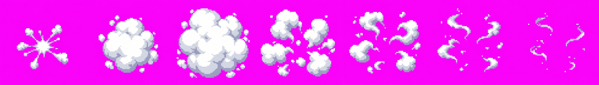

Unapproved art candidates. User approval is still required. Each strip used one of three allowed generation calls. These are HD source strips; the HD effect-name support is on Claude’s feature/naruto-skills-2 branch (PR #154), and these five strips have not been candidate-packed or checked in-game yet. Claude owns those checks and integration.
Eight-frame loop: blue chakra sphere with white-cyan core, cross-wrapped spiral streams and broken orbital wind arcs. 8 frames, 256px cells.
Source and extraction details are recorded in the versioned production provenance.
Six-frame startup: inward wisps contract through core, small orb and increasing spheres to full Rasengan. 6 frames, 256px cells.

Source and extraction details are recorded in the versioned production provenance.
Eight-frame impact: compressed contact sphere, expanding spiral wind arms, then fading ring arcs. 8 frames, 256px cells.

Source and extraction details are recorded in the versioned production provenance.
Seven-frame clone/Substitution puff: bright burst, full cloud, separated puffs and fading wisps. 7 frames, 256px cells.

Source and extraction details are recorded in the versioned production provenance.
Five-frame Substitution prop: smoke-hidden upright log, slash-marked upright pose, then tips and lies on its side. 5 frames, 256px cells.
Source and extraction details are recorded in the versioned production provenance.